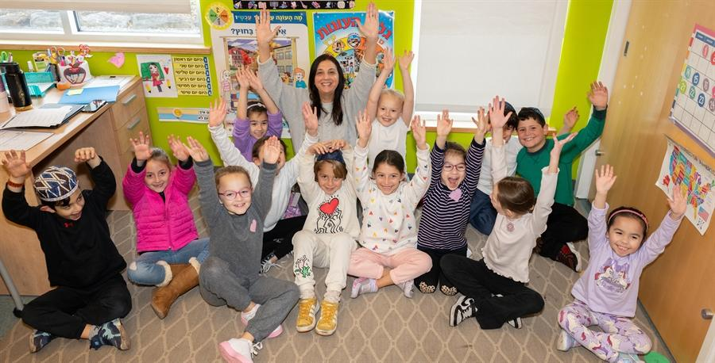
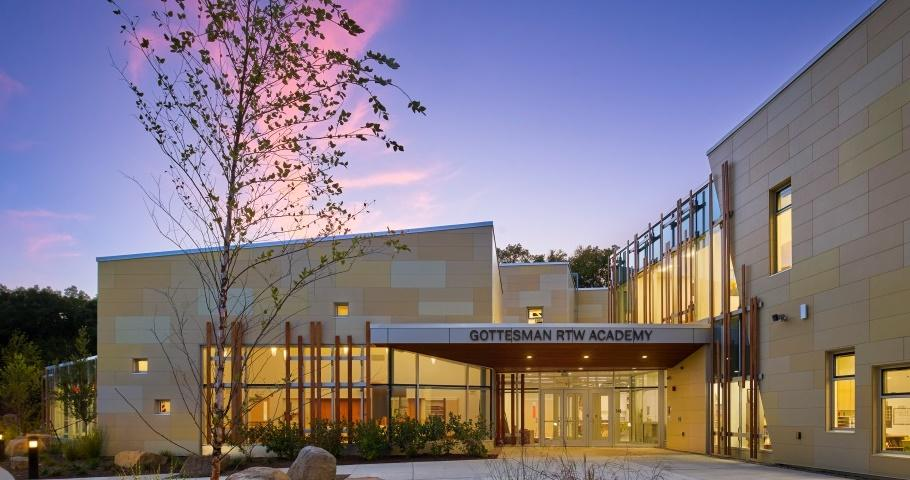
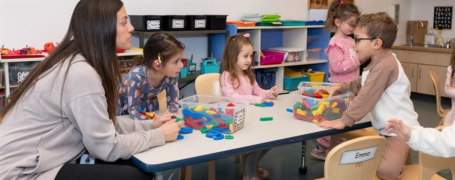
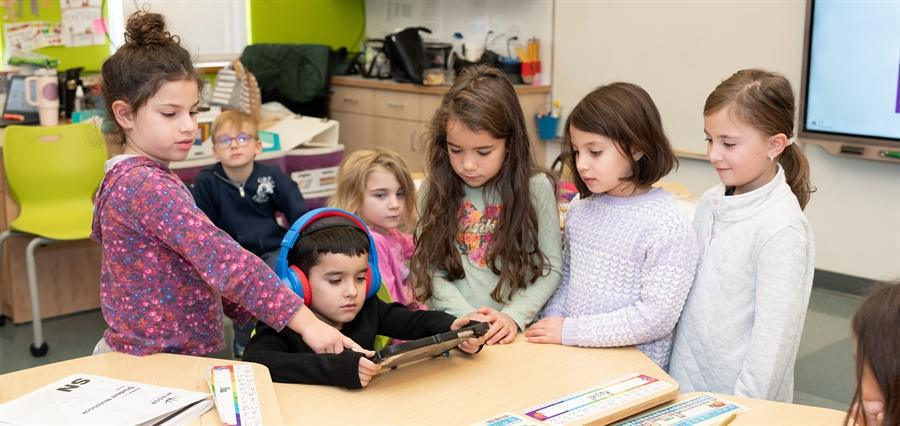
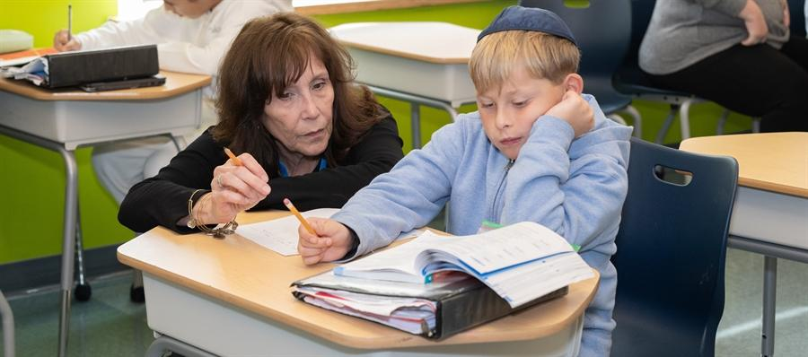
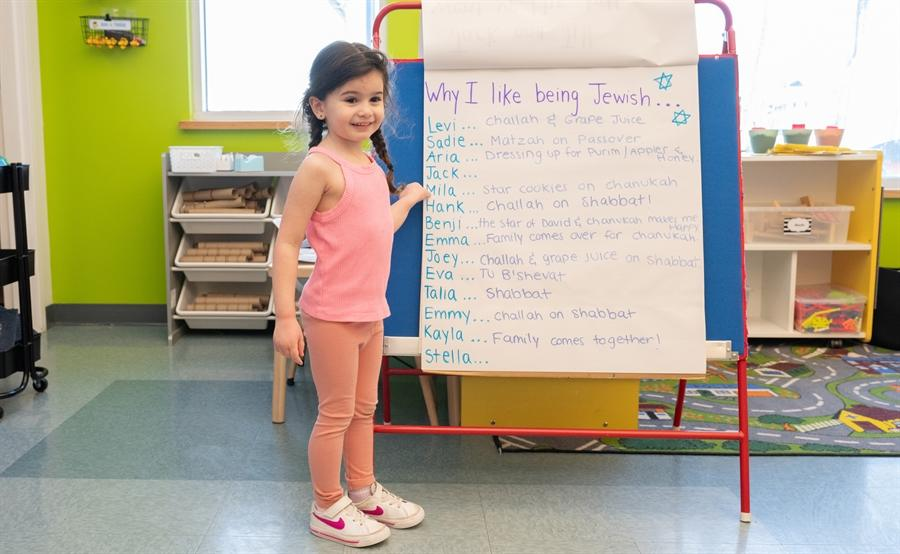
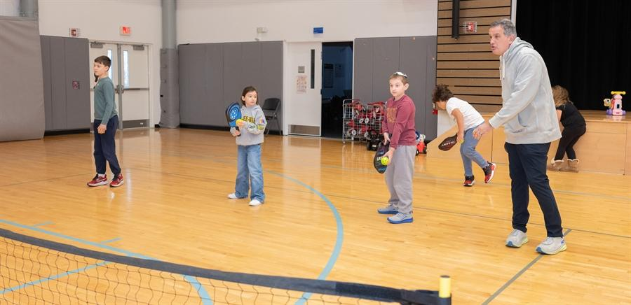
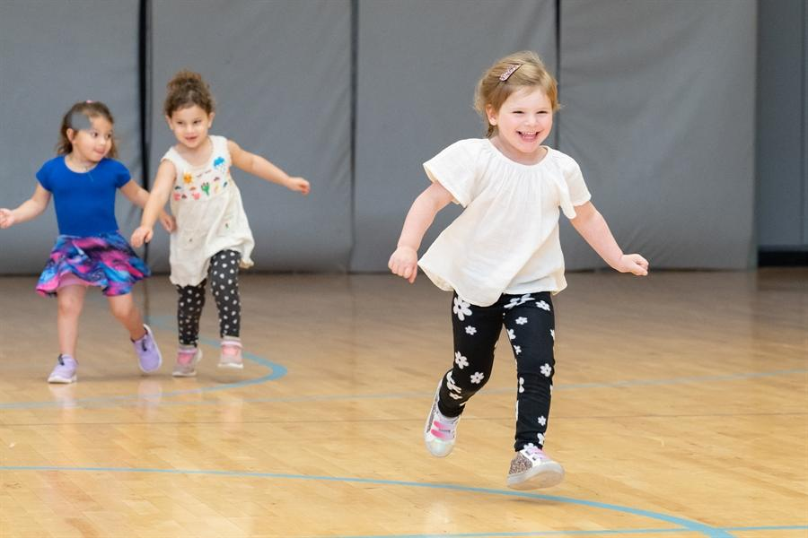

Where every child is known, valued, and celebrated.
Gottesman RTW Academy educates children from infants through 8th grade with a challenging dual curriculum and the richness of Jewish values.
Figures as published on grtwacademy.org.

Joyful, challenging learning rooted in Jewish life.
A co-educational, pluralistic Jewish community day school, and the only one in Northwestern New Jersey, welcoming families from every branch of Judaism, unaffiliated families, and families with one Jewish parent.
- Dual curriculum: about 60% General Studies, 40% Judaic Studies
- Blue Ribbon from the U.S. Department of Education
- Accredited by NJAIS; member of NAIS and Prizmah
- Full-time licensed social workers for social and emotional support
- After-care for all ages until 6:00 p.m.
A path from first steps to high school.
From the infant room to the 8th grade capstone trip to Israel.

Lillie Brandt Early Childhood Center
Infants through Junior Kindergarten
Lower School
Kindergarten through 5th gradeMiddle School
6th through 8th grade
STEM
From age three through 8th grade
The Arts
Visual arts, music, and drama
Athletics
GRTWA Lions, 5th–8th gradeJudaic Studies
Hebrew, Torah, and Israel
Camp Neshama
Summer camp for ages 2–5A premier Jewish education, within reach.
Through GRTWA's Tuition Assistance Program, eligible families will never pay more than 14% of their adjusted gross income toward tuition, no matter how many children are enrolled.
“From the moment you walk through our doors, we hope you feel what makes GRTWA so special: a true sense of belonging.”
Rav Will Keller, Head of School
Read the full welcome →